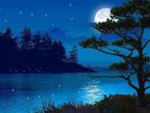

Welcome to the
"Moonlight on Mahinerangi"
24hr & 7hr Rogaines
(incorporating the NZ Championships)
Have you experienced a 24 hour Rogaine?
Whether you identify as a hiker, walker, tramper, orienteer, off-road runner, multisporter, adventure racer, or any other moderately fit outdoors aficionado, come join the challenge.
The “Moonlight on Mahinerangi” Rogaine is to be held in an area west of Dunedin over the weekend of 24th - 25th November, 2012. This is your opportunity to participate in a classic 24 hour rogaine.
Who is it for? - Although the 24 hour event is billed as a championship event this rogaine is for everybody. Top teams will be on the move for the full 24 hours but other people can enjoy a more relaxed approach returning to event headquarters for food (supplied), socialising, rest, and probably a sleep, before heading out again. Everybody is welcome – we encourage you to join us.
For those seeking a shorter event there will be a 7 hour non-championship rogaine as well.
Terrain and Location – the terrain is a mix of open farmland and tussock country with intricate streams and drainage patterns. There are a few woodlots and some pine plantations. The altitude range is from 350m to 1000m. You will get to visit some early gold-mining relics. The base is a 75km drive from Dunedin (35mins from Dunedin airport) and will be at a woolshed with an adjacent camping area.
Competition Categories – in both the 24 hour and 7 hour events there will be the usual Men, Women, and Mixed classes in the Open, Junior, Veteran and Superveteran categories.
Organisation – the New Zealand Championship is the only annual 24 hour Rogaine held in New Zealand so don’t miss it. It is being organised under the New Zealand Rogaining Association umbrella by an enthusiastic Dunedin-based team under the leadership of Bob Cunninghame.
Embargo area – the area within a radius of 14km of the Waipori Station Homestead, except for public roads, is embargoed to all intending competitors from now (July 2012) until after the events.
What is a Rogaine
A rogaine is an endurance orienteering event. It involves competitors travelling on foot in teams of a least two and at most five people, visiting designated sites shown on a topographical map, for which they accumulate points. Sites have differing points value. The skill is in choosing a route that maximises the points gained for effort expended, while returning to the finish on time. Rogaines appeal to trampers, orienteers and endurance athletes.
For more detail about the event see the Event Information page.